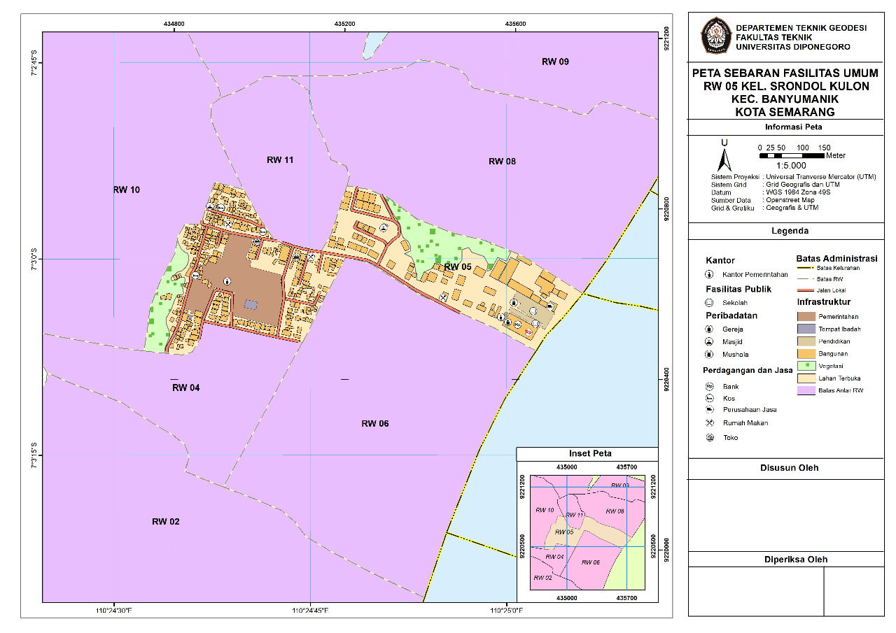

Kelompok 6
Feb 26, 2022
Kelompok 6
Feb 26, 2022
VECMAP
"Sebuah usaha bidang jasa dalam pembuatan peta"

VECMAP
Vecmap adalah sebuah usaha yang berdiri pada bulan Februari tahun 2022 . Vecmap merupakan sebuah usaha kewirausahaan yang bergerak pada bidang jasa pembuatan peta, khususnya pembuatan peta tematik dan toponimi. Seperti yang kita ketahui banyak sekali fenomena ataupun gejala di permukaan bumi ini, sehingga kebutuhan akan peta pasti sangat diperlukan untuk memperoleh informasi tersebut.
Vecmap sendiri berasal dari adopsi Bahasa Italia yaitu “vecchia” dan “mappa” yang berarti peta tua. Dimana seperti yang kita ketahui bahwa peta sudah lama ada sejak dahulu dan seiring zaman makin banyak perkembangannya. Mengingat makin banyak kebutuhan dan fenomena yang terjadi di permukaan bumi, sehingga kami harap dengan adanya jasa pembuatan peta semakin mempermudah dalam perolehan informasi khususnya bagi kalangan umum dan kalangan yang membutuhkan.
-
Our Value:
- Menjamin mutu dan kualitas produk sesuai dengan apa yang ditawarkan
- Harga yang ditawarkan terjangkau dan sesuai dengan produk yang ditawarkan
- Memberikan layanan terbaik terhadap setiap pelanggan
- Selalu memberikan layanan handal dan terpercaya
Mengapa Jasa Pembuatan Peta Tematik dan Toponimi?
Peta tematik adalah peta yang menyajikan patron penggunaan ruangan pada tempat tertentu sesuai dengan tujuan tertentu pula. Bisa dikatakan bahwa peta tematik merupakan peta yang hanya menggambarkan satu tema saja, seperti peta yang dibuat khusus untuk menggambarkan kepadatan penduduk suatu negara, jenis iklim persebaran jenis tanaman tertentu, data perubahan iklim, dan lain sebagainya.
Vision
Menjadi perusahaan penyedia layanan yang berfokus pada jasa pembuatan peta tematik dan toponimi dengan memberikan layanan yang profesional dan mengutamakan kualitas serta kepuasan bagi pelanggan.
-
Mission
- Menyediakan layanan jasa pembuatan peta yang dapat disesuaikan dengan keinginan serta budget yang diajukan oleh pelanggan
- Memberikan jasa dengan pelayanan yang baik serta produk dengan kualitas yang unggul dan harga yang terjangkau
- Memberikan arahan dan konsultasi mengenai prosedur pembuatan peta kepada client agar peta yang dibuat selaras dan sesuai kaidah pemetaan.
Latar Belakang
Peta merupakan gambaran dari permukaan bumi yang diproyeksikan terhadap bidang datar. Peta yang baik memberikan informasi yang akurat mengenai permukaan bumi kepada penggunanya. Ketersediaan informasi spasial terkait keadaan sekitar dan juga alam yang cenderung minim memicu kurangnya informasi bagi sebagian orang ataupun masyarakat luas. Tentu kita tak jarang merasakan kesusahan dalam mendapatkan informasi-informasi tersebut. Ditambah lagi dengan adanya keterbatasan kemampuan dalam mengolah data-data spasial tersebut membuat kita menjadi kebingungan dan juga kesulitan dalam memprosesnya untuk menjadikan suatu peta. Hal tersebut yang menjadi salah satu faktor terbentuknya usaha jasa ini.
Peta haruslah sesuai dengan kaidah pemetaan yang benar. Oleh karena itu, Kami hadir untuk menawarkan jasa dalam pembuatan peta yang berfokus pada peta tematik dan peta toponimi yang tentunya memiliki mutu dan juga kualitas produk yang unggul dan terpercaya. Dengan begitu, harapannya kami dapat membantu memberikan informasi berupa output peta yang dapat digunakan dan dimanfaatkan oleh masyarakat luas sesuai dengan kebutuhan yang diinginkan.
Our Service
- Fast Respons
- Product
- Paket Usaha
- Diskon
- Desain produk
Kami berusaha semaksimal mungkin untuk melayani customer dengan menjawab fast respons pertanyaan-pertanyaan customer kami dengan ramah.
Usaha kami bergerak di bidang jasa pembuatan peta. Pembuatan peta ini berfokus pada peta tematik dan toponiminya. Sistem dari usaha ini adalah membuat peta tematik sesuai dengan lokasi yang diinginkan oleh pelanggan. Pelanggan cukup memberikan lokasi dan data berupa batas-batas area yang akan dipetakan. Peta tematik akan dibuat dari pengambilan data lokasi pada software QGIS dan SAS Planet hingga proses layouting peta. Pada proses layouting peta, kami menerima permintaan berbagai design layouting yang dibutuhkan oleh pelanggan. Peta yang sudah selesai dibuat, dapat dicetak atau cukup dikirim melalui e-mail sesuai dengan keinginan pelanggan.
Metode yang akan kami gunakan dalam mempromosikan produk kami adalah melalui website. Pelanggan dapat menghubungi kami melalui contact person yang ada. Setelah itu kami akan memberikan form data pelanggan. Pelanggan dapat membayar sesuai dengan harga yang sudah disepakati. Harga ongkos kirim juga berlaku jika pelanggan meminta untuk mengirimkan hasil cetak peta ke alamat yang dituju. Pembayaran dapat melalui via transfer rekening bank dan e-wallet pada nomor yang sudah tertera.
Kami menawarkan pemesanan peta satuan dan juga peta paket langsung antara tematik dan toponimi dengan harga yang lebih terjangkau tentu dengan kualitas yang tidak diragukan.
Kami juga menawarkan diskon-diskon di beberapa waktu spesial agar semakin banyak pelanggan yang tertarik pada produk yang kami pasarkan.
Contoh hasil produk jasa pembuatan peta
